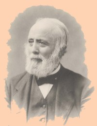

Jonathan Pearson
Jonathan Pearson was born in Chichester, New Hampshire in February 1813. His Pearson forebears were known as tradesmen, millers, and for service in the Revolutionary army. Jonathan was the son of Caleb and Mehitable Libbey (1795-1880) Pearson. In 1831, his father quit New England to find a better life in Ohio. 
Young Jonathan Pearson appears to have received extensive preparatory training in New Hampshire. But this Yankee stayed behind and then followed his brother Caleb who settled in Schenectady. There Jonathan was able to continue his education and graduated first in his class from Union College in 1835. He is said to have taught for a year in Philadelphia but returned to Schenectady where he taught science and natural history at Union College for many years. He is said to have received an A.M. from Union in 1838. He also was the college treasurer and librarian.
In April 1841, he married Mary Lord Hosford of Albany. The couple had three sons.
Personal interest in his family's history led him to genealogy and then to the study and translation of documents relating to the history of New Netherland and New York. He is responsible for the production of many invaluable resources - most of which were packaged and popularized by his contemporary, publisher Joel Munsell.
His birth date places him outside our research parameters. Hopefully, the Internet will help us get to know him better in the future. In the mean time, here are some links to what we have said about Professor Pearson so far:
Guide
Sources
FHG
Victorianizing the Past
Jonathan Pearson died in 1887. Although he passed on almost a hundred years before we began our search for the social history of this early American community, Pearson arguably was the single most important contributor to reclaiming and interpreting the history of the people of colonial Albany. He is a charter member of our historian's Hall of Fame.
Young Pearson kept a diary of his travels along the Erie Canal in 1822. Pearson left us many useful informational works and essays. Linked list of Pearson's works online.
Follow this link to more information about Jonathan Pearson on this website. A google.com search for "jonathan pearson+ albany" yields many many online resources. However, we find no dedicated Wikipedia page for him as of December 2016. But see this Wiki-based resource.
Photograph printed on frontispiece of his History of the Schenectady Patent. A portrait by Samuel Sexton done in 1875 was reproduced in a Schenectady County Historical Society newsletter in 2005.